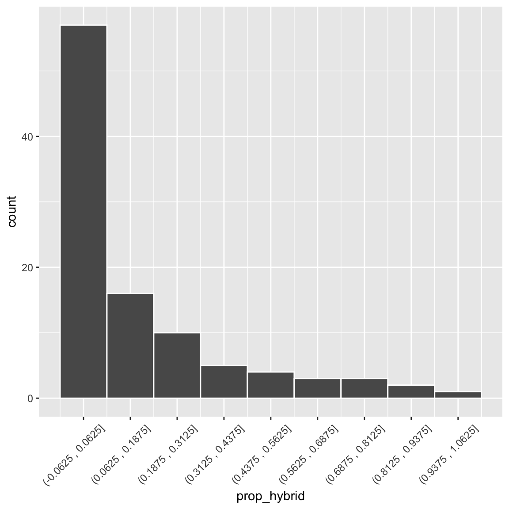

Figure 1: A bar plot showing the number of pink and white flowered plants, experimentally planted at location GC.
We begin our summary of variation in continuous variables in a somewhat unlikely place – a bar plot of a binary variable. Standard bar plots have a y-axis which starts at zero and shows the number of observations in each category, displayed on the x-axis. So, for example, Figure 1 shows that there are nearly fifty pink flowered RILs and closer to forty white flowered RILs planted at location GC. Bar plots can have any number of categories on the x-axis – but binary variables have a special characteristic – if we think of one option (say pink) as zero, and the other option (say white) as one, the mean tells us that 46.15% of the RILs planted had white flowers. Of course, this is a strange mean, as these plants were either pink or white, and none were 46.15% white, but it is a mean, nonetheless.
We can similarly display discrete numerical variables as a bar plot. So, for example, the x-axis of Figure 2 (in the Num hybrid bar plot tab) shows the number of a mother’s seeds that we found to be hybrids, and the y-axis shows the number of mothers with x seeds shown to be hybrid.
Unfortunately, Figure 2 is somewhat misleading – we aimed to genotype eight seeds per plant, but we sometimes missed this goal. Figure 3 (in the Prop hybrid bar plot tab) is more honest, as it shows the proportion, but it is a bit distracting and confusing – there are occasional weird dips which represent – not a biological fact of parviflora hybridization, but experimental weirdness of a non-standard sample size across mothers.
Figure 4 (in the Prop hybrid hist tab) is a histogram that displays the distribution of the proportion of hybrid seeds per RIL. A histogram is much like a bar plot, but rather than referring to a single value of the x-variable, in a histogram, values of x are binned.
Figure 2: A bar plot showing the number of genotyped seeds of each mom shown to be hybrid.
gc_rils |>ggplot(aes(x = prop_hybrid))+geom_bar()
Figure 3: A bar plot showing the proportion of genotyped plants shown to be hybrid. Most of the time, we genotyped eight seeds per mom.
gc_rils |>ggplot(aes(x = prop_hybrid))+geom_histogram(binwidth =1/8, color ="white")+scale_x_continuous(breaks=seq(0,1,1/8))
Figure 4: A histogram showing the proportion of genotyped plants shown to be hybrid. Most of the time, we genotyped eight seeds per mom.
It helps to remember that in contrast to a bar plot, where the value on the x axis is the value of all the observations in that bar, in a histogram this value is the center of the range of values in the bin. So in Figure 4 the first bin corresponds to values between -0.0625 and 0.0625, and the second bin (centered on 1/8th) corresponds to proportions between 0.0625 and 0.1875, etc… . The x-axis of Figure 5 shows this more explicitly, but it is too busy, and complex for standard presentation.

Figure 5: A histogram showing the proportion of genotyped plants shown to be hybrid. Most of the time, we genotyped eight seeds per mom. This is identical to Figure Figure 4, except, the x-label shows the range of x values rather than the center of thebins.
When making a histogram, you are in charge of the bin size. In ggplot2 you can specify this with one of two arguments:
binwidth: Which tells R how big to make the the bins.
bins: Which tells R how many equally sized bins to split the data into.
There is not a universally correct answer for the appropriate bin size – it will vary by data set. It takes thought and expertise. It is best to experiment some until you find the binning that honestly reflects the variability in your data. This reflects a trade-off between capturing the variability, without distracting the reader with every bump or dip. I usually start with about thirty bins and then dial that number up or down until I feel like the variability in the data is well-communicated by the plot.
Let’s get started with univariate summaries!
The following sections introduce how to summarize a single variable by: